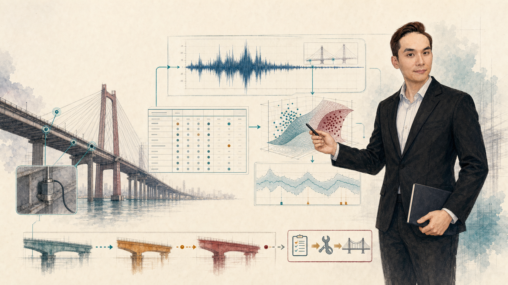
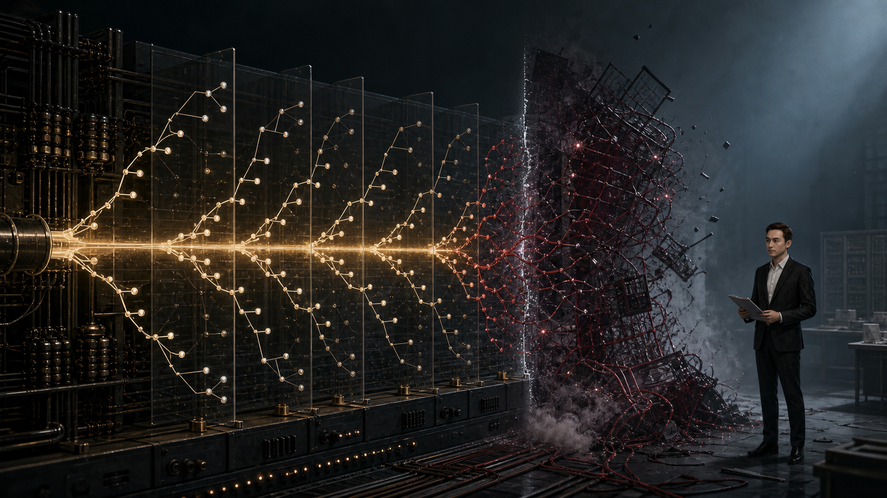
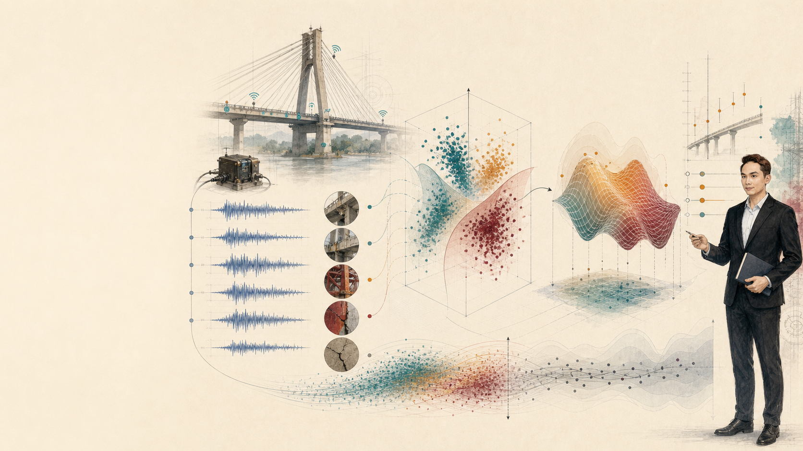
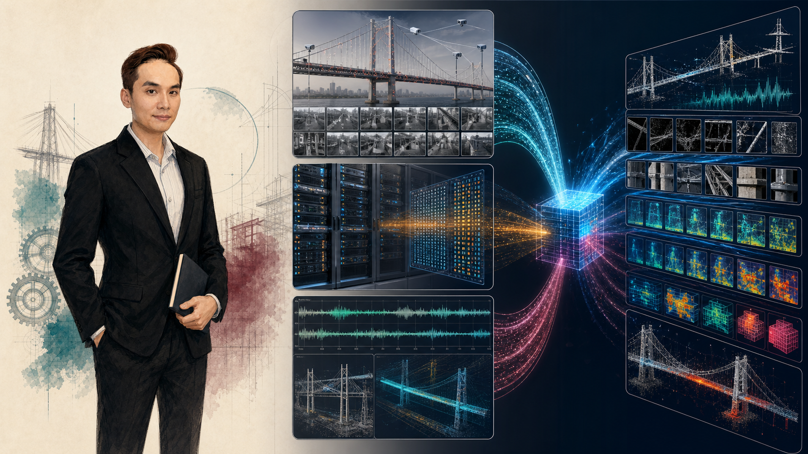
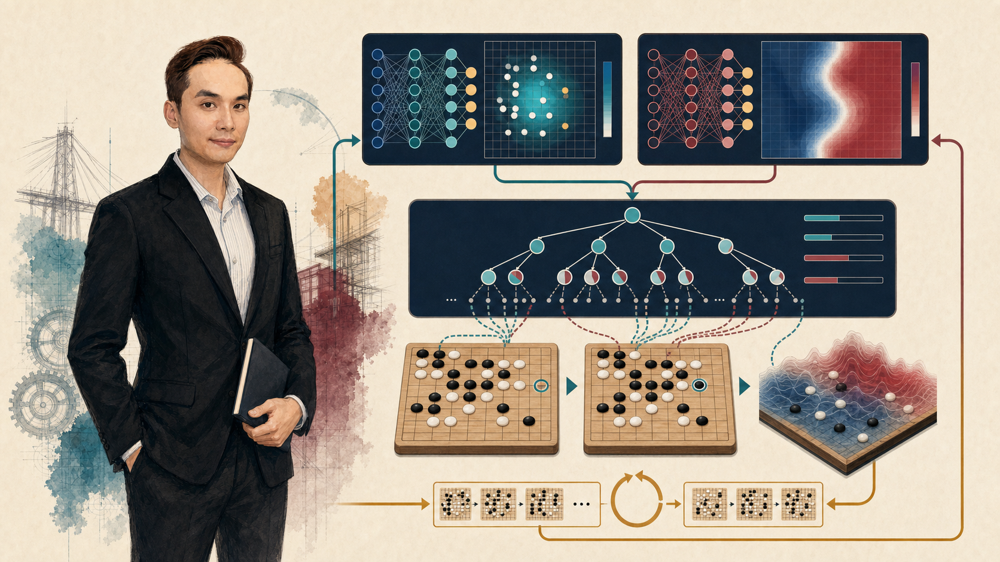
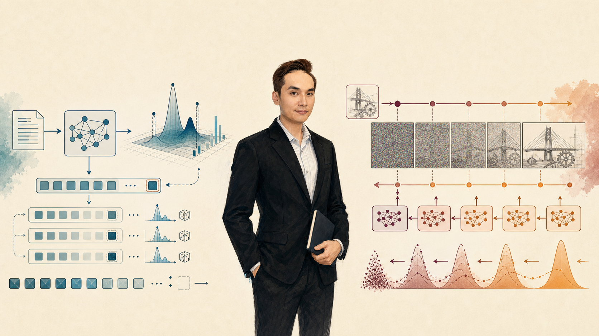
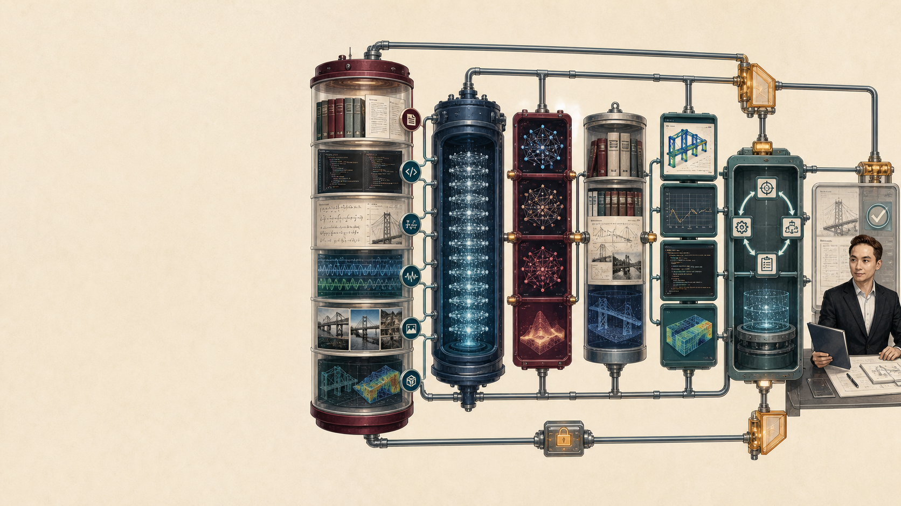
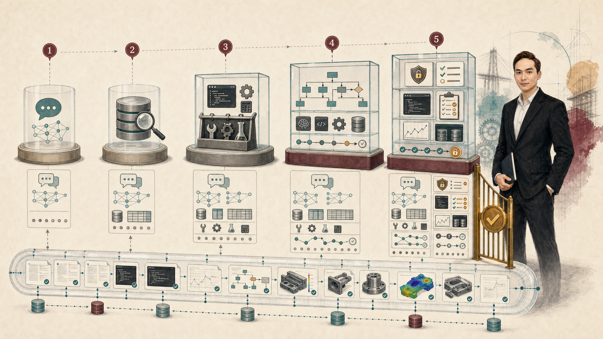
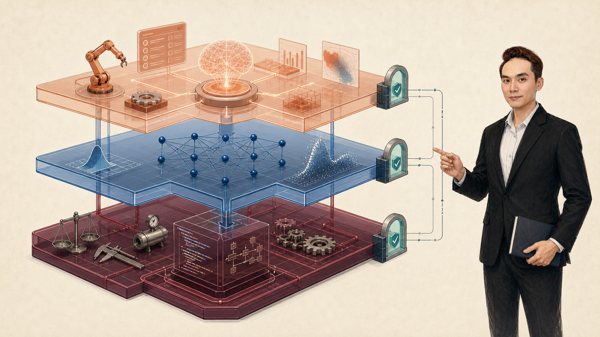
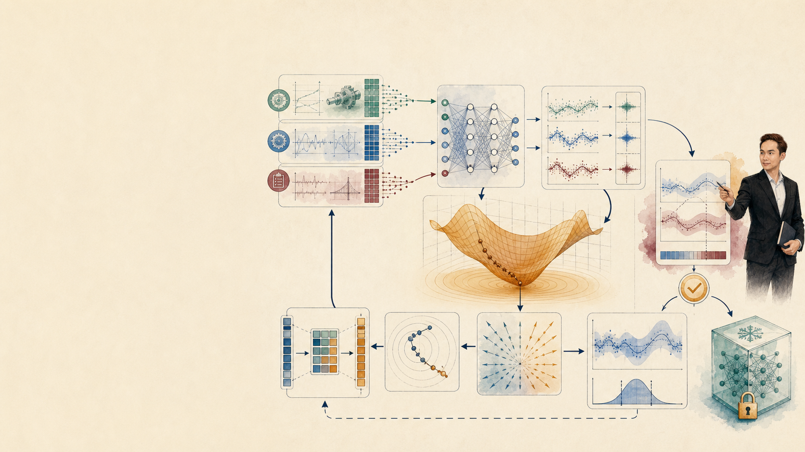

W01 · H1 · FALL 2026
Machine Learning From prediction to evidence—and from models to bounded agents.
Prof. Chi-Hua Jonny Yu · Monday 14:00–17:00
Visual: Image 2.0 conceptual illustration · 2026-08-26
1 minute. Open with the course promise: students build, test, reproduce, and explain computational evidence, not merely call AI tools. [Sources] Fall 2026 syllabus; original Course Introduction 2022/2025; keynote-ai-shift.png.WHY THIS COURSE CHANGED
AI changed the interface to computation. Speed Draft code, models, and analyses in minutes.
Scope Work across language, images, data, and tools.
Agency Select and execute multi-step actions.
The bottleneck moved from producing an output to deciding whether the output deserves trust.
Continuity: original introduction slides 4–8, “Speed / Impact”
3 minutes. Preserve the original Speed/Impact thesis, but update the mechanism. Generative models lower the cost of candidate outputs; engineering value now depends on verification and consequence-aware decisions. [Sources] Original Course Introduction 2022/2025 slides 4–8.92%
PREDICT BEFORE WE EXPLAIN
A bridge classifier reports 92% accuracy. Would you approve an inspection decision?
Which bridge? Which split? Which errors? Which uncertainty? Which cost?
Synthetic teaching scenario; no real bridge performance claim
3 minutes. Poll the room. Expected answer: insufficient evidence. Accuracy omits prevalence, split integrity, false-negative cost, uncertainty, and deployment conditions. [Sources] Synthetic teaching scenario.
COURSE PROMISE
Build results that another engineer can rerun, challenge, and explain. A model is useful only when its data, assumptions, errors, and decision boundary are inspectable.
Reproduce Interpret Decide
Course evidence contract · visual generated for W01-H1
2 minutes. Every important result needs a rerunnable artifact, evaluation tied to the decision, error inspection, and a bounded claim. [Sources] Fall 2026 syllabus; hero-evidence.png.
SEMESTER ARCHITECTURE
Foundations first. Agents later. Data → ML → Deep learning → Generative AI → Agents
Reproducibility and interpretability constrain every layer.
Fall 2026 course plan · Image 2.0 conceptual architecture
2 minutes. Vibe coding and agents are applications built on data, ML evaluation, and neural-network foundations. [Sources] Fall 2026 syllabus; deep-semester-architecture.png.1950 Turing tests machine intelligence 1956 AI becomes a named field 1957 Perceptron learns a boundary 1986 Backprop learns representations 1997 Deep Blue scales search 2012 AlexNet aligns data, GPUs, CNNs 2016 AlphaGo learns and searches 2017 Transformer scales attention 2020–22 Few-shot and instruction LLMs 2023–26 Retrieval, tools, agents Rules did not disappear. Search did not disappear. Models accumulated into larger systems.
Turing 1950 · Dartmouth 1956 · Rumelhart 1986 · IBM 1997 · AlexNet 2012 · AlphaGo 2016 · Transformer 2017
3 minutes. Use this as a map. Rules, examples, objectives, prompts, and tool policies are different ways to specify behavior. [Sources] Primary sources mapped in opening-source-notes.txt.
1950 → 1956
From “Can machines think?” to a research program. Turing reframed the question as observable behavior. Dartmouth proposed language, abstraction, problem solving, and self-improvement as machine capabilities.
1956
Historical reconstruction, not an archival photograph · Turing, Mind (1950) · Dartmouth proposal/workshop
3 minutes. Turing's 1950 paper introduced the imitation game. McCarthy's 1955 proposal named AI; the 1956 Dartmouth workshop helped establish the field. [Sources] Turing 1950; Dartmouth AI history; keynote-dartmouth-1956.png.
IF vibration ↑ AND temperature ↑ THEN inspect bearing
Strength: explicit logic. Boundary: coverage depends on rules humans anticipated.
Conceptual illustration; example rule is synthetic
2 minutes. Symbolic AI gives inspectable inference but has a knowledge-acquisition and coverage burden. Modern systems still need explicit constraints for units, permissions, and safety. [Sources] Original AI-vs-Data slide; deep-symbolic-learning.png.wᵀx + b = 0 held-out point? Rosenblatt, The Perceptron, Cornell Aeronautical Laboratory report (1957)
2 minutes. A perceptron learns a linear separator. Ask how to classify the outlined point and what happens when classes are not linearly separable. [Sources] Rosenblatt 1957.
EXPERT SYSTEMS · AI WINTERS
Narrow competence was mistaken for general intelligence. Rule systems could excel inside a defined domain. Outside it, coverage, maintenance, and brittle assumptions became visible.
More cases → more rules → more interactions → harder validation
Conceptual mechanism; AI winter denotes periods of reduced confidence and funding
3 minutes. Expert systems were valuable, but scaling knowledge acquisition and exceptions was difficult. Progress was episodic because expectations, compute, data, and evaluation were misaligned. [Sources] Historical synthesis; keynote-ai-winter.png.
THE STATISTICAL-LEARNING TURN
Behavior moved from handwritten rules to fitted functions. f̂ = arg minf∈ℱ [ empirical loss + regularization ]
Examples define the pattern; held-out data challenges whether it generalizes.
Conceptual illustration; no measured performance values
3 minutes. Training estimates parameters; held-out data tests generalization. Connect to regression, classification, trees, kernels, and ensembles. [Sources] Course textbook; keynote-statistical-learning.png.
Data GPU compute Learned representations
15.3% AlexNet top-5 test error in ILSVRC-2012 vs. 26.2% runner-up
Rumelhart, Hinton & Williams (1986) · Krizhevsky, Sutskever & Hinton (2012)
3 minutes. Backprop adjusts weights and lets hidden units learn features. AlexNet combined a large benchmark, GPU implementation, CNNs, and regularization. [Sources] Rumelhart et al. 1986; Krizhevsky et al. 2012.
Deep Blue Large-scale search + hand-engineered evaluation
AlphaGo Policy network + value network + MCTS + self-play
Reinforcement learning optimizes sequential decisions through feedback—not just one prediction.
IBM Deep Blue (1997) · Silver et al., Nature (2016)
3 minutes. Deep Blue used massive search with engineered evaluation. AlphaGo combined expert-game supervision, self-play RL, policy/value networks, and MCTS. [Sources] IBM 1997; Silver et al. 2016.
Autoregressive Predict the next element given prior context.
Diffusion Reverse a progressive noising process.
Seed, decoding, temperature, or guidance can change the sample.
Goodfellow et al. (2014) · Ho et al. (2020)
3 minutes. Autoregressive models factorize sequences; diffusion learns reverse denoising. Reproducibility must record inference settings. [Sources] Goodfellow 2014; Ho 2020.
Pretraining next-token and multimodal predictionIn-context use instructions and few-shot examplesPost-training human demonstrations and preferences
GPT-3 demonstrated broad few-shot behavior; InstructGPT improved instruction following with human feedback.
Brown et al. (2020) · Ouyang et al. / OpenAI InstructGPT (2022)
3 minutes. GPT-3 supplied tasks in context without gradient updates. InstructGPT added demonstrations, preference comparisons, a reward model, and RLHF. [Sources] Brown et al. 2020; Ouyang et al. 2022.
Model + Context + Retrieval + Tools + State + Permissions
Tool access increases capability and the cost of error. Evaluate the trajectory, not only the final sentence.
ReAct (2022) · Toolformer (2023) · agent interoperability work (2025–26)
3 minutes. Production agents add retrieval, state, permissions, tools, and approval. Infrastructure standards do not prove reliability. [Sources] ReAct 2022; Toolformer 2023; OpenAI AAIF 2025.WHAT THE HISTORY TEACHES
Capability changes. Evidence obligations accumulate. Rules Make constraints explicit
Learning Generalizes from examples
Generation Samples plausible outputs
Agents Act through tools and state
Every new layer creates a new failure surface. NEXT · SOFTWARE 1.0 → 2.0 → 3.0
Synthesis for this course
2 minutes. Ask for one evidence obligation per layer: rule coverage, split/generalization, stochastic configuration/grounding, and trajectory/permission checks. [Sources] Course synthesis.

02
SOFTWARE PARADIGMS
Software is changing again Each new layer changes who specifies behavior - and what evidence must be checked. 1 minute. Transition from adoption to architecture. Tell students that "Software 1.0, 2.0, and 3.0" is a useful conceptual lens, not a formal standard. The layers coexist. The teaching question is: where does behavior come from, and where must constraints and verification live?
SOFTWARE 1.0
Humans specify the behavior directly
y = frules (x)
stress_MPa = stress_Pa / 1e6
allowable = yield_MPa / gamma
if stress_MPa > allowable:
return "STOP"
return "CONTINUE"
SensorPa
→ ConvertMPa
→ Compareσ > σy /γ?
YES → STOP NO → CONTINUE
Strength: deterministic and auditable
Limit: every relevant rule must be authored
2 minutes. Define Software 1.0 as behavior explicitly encoded in source code. Walk through the unit conversion before the decision rule; this is where engineering invariants belong. Ask what happens if a new failure mechanism is not represented. The limitation is coverage, not value. Deterministic code remains essential for units, bounds, solver calls, access control, and safety interlocks.
SOFTWARE 2.0
Data and optimization specify behavior 
Specify Examples and an objective define desired behavior statistically.
Optimize Backpropagated gradients update parameters to reduce training loss.
Challenge Held-out validation, calibration, and frozen artifacts test generalization.
Learn parameters θ* = arg minθ Σi L(fθ (xi ), yi ) + λΩ(θ)
Experience(x, y)
→ Modelfθ
→ LossL(ŷ, y)
→ Optimizerupdate θ
Data defines observed experienceLabels define operational truthLoss prices mistakesOptimization searches parameters
2 minutes. Read the objective from right to left: regularization controls complexity; the loss prices prediction errors; the sum aggregates observed examples; optimization selects parameters. Stress that the algorithm sees labels, not physical truth directly. If labels are delayed, noisy, or defined by a proxy, the model learns that operational definition.
TRAINING SEMANTICS
Optimization changes weights - not reality
D Dataset Which operating conditions are visible?
Missing regime → unsupported prediction Y Label What event counts as "damage"?
Proxy label → proxy behavior L Loss Which errors receive more penalty?
Symmetric loss → symmetric incentives S Split What future situation is simulated?
Random rows may leak bridge identity
Diagnostic rule When a model fails, inspect the learning problem before tuning the architecture.
2 minutes. Use the four levers as a debugging checklist. Architecture tuning cannot create missing operating regimes, correct a poor label definition, or undo a contaminated test split. Ask students which lever controls the cost of a false negative. The immediate answer is the loss during training and the threshold/metric during evaluation; both must reflect the engineering decision.
SOFTWARE 3.0
Models coordinate tools through language
Intent → Plan → Tool → Artifact → Human gate
Working definition A model selects the next action from context, invokes bounded tools, observes results, and stops under explicit criteria.
Conceptual lineage: Karpathy, Software Is Changing (Again), 2025 .
2 minutes. Define Software 3.0 operationally rather than as "AI that does everything." Language expresses intent and context; a model proposes or selects actions; deterministic tools perform bounded operations; artifacts are inspected at gates. The model is part of a control loop. This framing makes permissions, logging, stop conditions, and acceptance tests visible.
ARCHITECTURE PRINCIPLE
The layers accumulate; they do not replace one another
Layer Owns Bridge-monitoring example Must not own alone
1.0 · Rules invariants + interfaces units, limits, solver API unknown-pattern inference
2.0 · Model statistical estimate damage probability + uncertainty safety authorization
3.0 · Agent workflow coordination load data, run model, draft report unreviewed deployment
Safe system = constraints + estimates + orchestration + accountable approval
2 minutes. Walk across the rows. Rules enforce non-negotiable invariants. Models estimate uncertain quantities. Agents coordinate steps and artifacts. Human or institutional authority approves consequential actions. Give a failure example for each misplaced responsibility: units delegated to an LLM, a classifier treated as a safety interlock, or an agent allowed to deploy without acceptance evidence.
WORKFLOW OR AGENT?
The difference is who selects the next action
Fixed workflow Control flow is authored in advance.
Load → Clean → Fit → Report
at = πrules (stept )
Agentic workflow A model selects actions from state and observations.
State st → Action at → Observation ot+1 ↺
at ∼ πmodel (· | st )
Design choice Prefer a fixed workflow when the valid path is known; add agency only where adaptation creates measurable value.
2 minutes. Contrast deterministic routing with model-selected routing. Agency is not a quality badge. If the process is known and stable, a fixed workflow is easier to test and audit. Use an agent when the next step depends on unstructured evidence or unexpected observations. Even then, bound the available actions and record the state-action-observation trace.
CONTROL LOOP
An agent needs a stop condition, not just a prompt
GOAL acceptance criteria PLAN bounded actions ACT invoke tool OBSERVE capture artifact REFLECT compare evidence GATE human / policy STOP pass · fail · budget
Max actions Allowed tools Evidence schema Escalation owner
2 minutes. A prompt describes intent; a control loop governs behavior. Define at least four boundaries before execution: maximum actions or cost, allowed tools, required evidence schema, and escalation owner. Stop can mean success, explicit failure, exhausted budget, or insufficient evidence. An agent that loops until it finds a pleasing answer is not robust.
PRESS R · AUTONOMY BOUNDARY
Permission must grow with consequence
READ source + scope
→ WRITE diff + provenance
→ EXECUTE sandbox + logs
→ DEPLOY acceptance + owner
A notebook can run in Colab. Does that imply it may overwrite the canonical dataset? No.
2 minutes. Ask students to assign a permission level to a Colab notebook that trains a model and exports a report. Reveal the distinction: execution permission does not imply write access to canonical data, and neither implies deployment authority. Explain the evidence escalation: read needs source/scope; write needs a reviewable diff and provenance; execute needs isolation and logs; deploy needs acceptance evidence and an accountable owner.
Planning decisions Human ≈70% Agent ≈30%
What to build · approach · completion criteria
Execution decisions Human ≈20% Agent ≈80%
Files · code · commands · implementation details
Evidence boundary Privacy-preserving classifier over ~400,000 Claude Code sessions, Oct 2025-Apr 2026. This is not a universal law for all tools or users.
Source: Anthropic, Agentic coding and persistent returns to expertise , June 2026.
2 minutes. Read the scope before the result. The study infers decisions from one provider's sessions, so it supports a pattern, not a universal percentage. The useful design implication is division of labor: students should own problem formulation, constraints, evidence, and acceptance; agents may handle much implementation. Domain expertise remains valuable because it improves instructions and verification.
ARTIFICIAL INTELLIGENCE MACHINE LEARNING DEEP LEARNING
Agentic system models data tools evaluation governance
03
FOUNDATIONS
Machine learning remains the core Tool fluency without model literacy produces fast, unauditable mistakes. 1 minute. Transition back to the course core. An agentic application may use a foundation model, classical predictors, retrieval, deterministic tools, and policy gates. Students need ML literacy to choose data, objectives, splits, metrics, and explanations. Vibe coding is an implementation mode inside this larger system.
MITCHELL'S DEFINITION
Specify learning before selecting an algorithm
T Task Classify each bridge/time window as damage or no damage.
P Performance Recall at an acceptable false-alarm rate, evaluated on unseen bridges.
E Experience Labeled vibration windows with bridge ID, sensor, load, time, and units.
A program learns from E with respect to T and P if performance at T, as measured by P, improves with E.
Adapted from Tom M. Mitchell, Machine Learning , 1997.
2 minutes. Make students say T, P, and E aloud for the bridge case. Correct vague versions: "detect damage" is not enough unless the prediction unit and output are defined; "accuracy" may not encode safety cost; "sensor data" omits labels, metadata, and sampling structure. Algorithm choice begins only after the learning problem is operationally specified.
predict healthy
predict damage
τ
0.0 model score p(damage) 1.0
Predicted damage Predicted healthy
Actual damage
TRUE POSITIVE 0 damage caught FALSE NEGATIVE 0 damage missed Actual healthy
FALSE POSITIVE 0 false alarm TRUE NEGATIVE 0 correct clearance
Click TP, FN, FP, or TN. The first word tells whether the prediction is correct; the second tells the predicted class.
Recall = Sensitivity = TPR - TP / (TP + FN) Precision = PPV - TP / (TP + FP) Specificity = TNR - TN / (TN + FP) Accuracy - (TP + TN) / N F1 score - 2TP / (2TP + FP + FN)
2-minute core; optional 4-minute extension. Drag the threshold down and ask which cells increase: TP and FP. Drag it up and observe FN and TN. Click each matrix cell to read its engineering interpretation. Emphasize that recall and sensitivity are the same quantity: among all actual damaged cases, how many were caught? Precision asks a different denominator: among all alarms, how many were truly damaged?
predicted value → residual e
curvature → misspecified relationship funnel → non-constant variance isolated points → inspect provenance
2 minutes. A single RMSE compresses error structure. In a well-specified mean model, residuals should not show systematic curvature; increasing spread suggests heteroscedasticity and changing uncertainty. Do not automatically delete outliers. First inspect whether they are measurement errors, rare but valid regimes, or the exact failure cases the model must handle. Always compare against a simple baseline.
temperature (°C) vibration (m/s²)
Before naming clusters:
What distance is used? Are units and scales comparable? Why this number of clusters? Is structure stable across resampling? Standardize zij = (xij - μj ) / σj Fit μ and σ on training data only.
2 minutes. Ask whether the three groups are three damage modes. The answer is unknown. Clustering identifies structure under a chosen representation and distance; semantics require domain evidence. Press R to reveal standardization. Point out that even unsupervised preprocessing must respect the evaluation split when the cluster representation feeds a downstream model.
EVALUATION DESIGN
The split defines the claim you are allowed to make
Random rows
Valid only when rows are independent and deployment is exchangeable.
Group split Bridge A Bridge B Bridge C
Tests generalization to an unseen asset.
Time split past recent future
Tests forecasting under temporal drift.
TRAIN fit parametersVALIDATION choose model / thresholdTEST estimate once, after choices are frozen
2 minutes. The split is a simulation of deployment. Random rows are often invalid for repeated sensor windows because neighboring windows and bridge identity leak across partitions. Group split supports an unseen-bridge claim; time split supports a future-period claim. The test set is not a dashboard consulted after every change. Repeated test use converts it into validation data.
DATA LEAKAGE · PRESS R
Preprocessing can quietly train on the test set
Wrong All data → fit scaler → split → score
Test statistics influence the transform.
test information ↗
Correct split → fit scaler on train → transform val/test → score
pipe = make_pipeline(StandardScaler(), model)
pipe.fit(X_train, y_train)
pipe.score(X_test, y_test)
Rule Any step that learns from data belongs inside the train-only pipeline.
Source: scikit-learn, Common pitfalls and recommended practices .
2 minutes. Leakage is information that would not be available at prediction time entering model construction. Scaling looks harmless, but fitting mean and variance on all rows exposes test distribution. The same risk applies to imputation, feature selection, PCA, and target-derived features. Reveal the correct pipeline and emphasize that the pipeline itself is the evaluated model.
Balanced test
92% accuracy trap
Safety-first threshold
Pred + Pred -
Actual + TP - FN -
Actual - FP - TN -
Always compare: majority · simple statistical model · physics/rule baseline
Recall · Sensitivity · TPR - Of actual damage, how much did we catch? TP/(TP+FN)Precision · PPV - Of alarms, how many were real? TP/(TP+FP)Specificity · TNR - Of healthy cases, how many were cleared? TN/(TN+FP)Negative predictive value - Of clearances, how many were healthy? TN/(TN+FN)Accuracy - What fraction of all decisions were correct? (TP+TN)/NF1 score - Harmonic balance of precision and recall. 2TP/(2TP+FP+FN)False positive rate · FPR - Healthy cases incorrectly alarmed. FP/(FP+TN)False negative rate · FNR - Damaged cases incorrectly cleared. FN/(FN+TP)
No metric is universally best. Choose the denominator and error cost that match the engineering decision.
2-minute core; optional 5-minute extension. Start with the 92% accuracy trap. The model predicts every case as healthy: accuracy is 92%, specificity is 100%, but recall is 0% because all eight damaged cases are missed. Then select safety-first: recall becomes 100%, but precision falls because more healthy cases trigger alarms. Use the balanced case to compare the denominators. Sensitivity and recall are synonyms; specificity measures the negative class, not the opposite of precision.
REPRODUCIBILITY
A result must travel with the conditions that created it data hash split IDs environment seed + config code + command outputs + tolerance
Course contract Same evidence package → same result within a declared tolerance. Independent route → same conclusion is stronger replication evidence.
2 minutes. Define the course's operational standard. A notebook alone is insufficient: data version, exact split membership, environment, random seed and configuration, command, outputs, and numerical tolerance are all part of the result. Exact bitwise identity may be unrealistic on different accelerators; declare an appropriate tolerance. Independent implementation or data that supports the same conclusion is stronger replication evidence.
INTERPRETABILITY
Start with the decision question
Global What patterns does the model use overall? summary importance · partial dependence
Local Why this prediction? feature attribution · counterfactual probe
Error Where does it fail? residual slices · subgroup analysis
Action Can a human use the explanation safely? stability · fidelity · domain plausibility
NIST distinguishes explainability of mechanisms from interpretation in the system's functional context.
2 minutes. Interpretability is not one chart. Choose a method from the question. Global summaries describe average behavior; local attributions address one prediction; error analysis identifies failure regimes; action-focused interpretation tests whether the explanation supports a safe decision. Always check stability, fidelity to the model, and domain plausibility. An attractive explanation can still be unstable or misleading.
INFERENCE BOUNDARY
Attribution is not causality
Prediction explanation Temperature → Model score ← Traffic Weather ↗ ↖
φj : allocate a prediction among features
Question: "Which observed features influenced this model output?"
Causal effect do(x = x') → physical/system change → outcome
E[Y | do(X=x')] - E[Y | do(X=x)]
Question: "What would change if we intervened?"
Requires observational model + assumptions ≠ Requires identification, experiment, or defensible causal design
References: SHAP documentation ; Judea Pearl, Causality ; NIST AI RMF .
2 minutes. A feature attribution explains the fitted model under its data distribution; it does not prove that changing the feature changes the physical outcome. Weather can influence both temperature and traffic, creating associations. A causal claim requires identification assumptions, an experiment, or another defensible causal design. Ask: if temperature has high SHAP value, should we cool the sensor to prevent damage? No - the attribution does not establish that intervention effect.
PAIR AUDIT · 4 MINUTES
Turn "92%" into an auditable claim
□ provenance + units □ prediction unit □ group/time split □ baseline □ error-cost metric □ uncertainty □ reproducibility package □ decision owner
Exit ticket Which Software layer owns units? What claim does the test split support? What evidence separates attribution from causality? 1.0 constraints · deployment-matched generalization · intervention/identification evidence
Next: ML evidence in practice - reproducible notebooks, baselines, and interpretable diagnostics.
4 minutes. Give pairs two minutes to audit the opening claim using the eight boxes. Ask one pair for the strongest missing item and another for the correct evaluation split. Use the exit ticket as a rapid verbal check, then press R for the compact answers. Close by stating the standard for the course: every result must identify its data, split, baseline, metric, uncertainty, reproducibility conditions, interpretation boundary, and decision owner.